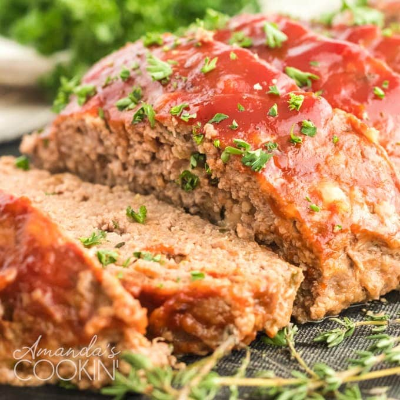

Beef Meatloaf

Description
My Grandmother 'Nanaw' Rowan made the most delicious meatloaf in the state. When she passed away, she didn't leave me her recipe, but she left me the desire to recreate it. I think this is it, in flavor and texture. Don't let the number of ingredients discourage you. It's part of the magic in creating a masterpiece!
Ingredients
-
Brown Sugar Glaze
- 1/2 cup ketchup
- 1/4 cup brown sugar
- 2 tbs. cider vinegar
-
Meatloaf
- cooking spray
- 1 onion, chopped
- 1/2 green bell pepper, chopped
- 2 cloves garlic, minced
- 2 large eggs, lightly beaten
- 1 tspn. dried thyme
- 1 tspn. seasoned salt
- 1/2 tspn. ground black pepper
- 2 tspn. prepared mustard
- 2 tspn. Worcestershire sauce
- etc.
Steps
- Combine ketchup, brown sugar, and cider vinegar in a bowl; mix well.
- Preheat oven to 350 degrees F (175 degrees C). Spray two 9x5-inch loaf pans with cooking spray or line with aluminum foil for easier cleanup (see Cook's Note).
- Place onion and green pepper in covered microwave container and cook until softened, 1 to 2 minutes. Set aside to cool.
- etc.